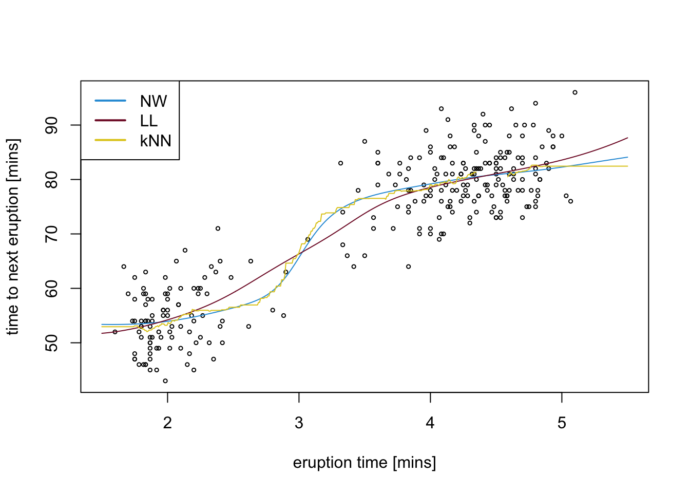

Section 9 Examples
To conclude these notes, we give three examples where we use cross-validation to choose the tuning parameter in kernel density estimation, kernel regression, and k-nearest neighbour regression.
9.1 Kernel Density Estimation
Here we show how to find a good bandwidth for Kernel Density Estimation, by using cross-validation. From lemma 8.1 we know that we can choose the \(h\) which minimises \[\begin{equation} \mathrm{CV}(h) = \int \hat f_h(x)^2 dx - \frac{2}{n}\sum_{i=1}^n \hat f_h^{(i)}(x_i) =: A - B. \tag{9.1} \end{equation}\]
We will consider the snow fall dataset again:
# data from https://teaching.seehuhn.de/data/buffalo/
buffalo <- read.csv("data/buffalo.csv")
x <- buffalo$snowfall
n <- length(x)In order to speed up the computation of the \(f_h^{(i)}\), we implement
the kernel density estimate “by hand”. Thus, instead of using the built-in
function density, we use the formula
\[\begin{equation*}
\hat f_h(x)
= \frac{1}{n} \sum_{i=1}^n K_h(x - x_i).
\end{equation*}\]
from definition 1.2.
We use a number of “tricks” in the R code:
- For numerically computing the integral of \(\hat f_h^2\) in term \(A\) we evaluate \(\hat f_h\) on a grid of \(x\)-values, say \(\tilde x_1, \ldots, \tilde x_m\).
- When computing \(\hat f_h(\tilde x_j)\)
we need to compute all pair differences \(\tilde x_j - x_i\). In R, this can
efficiently be done using the command
outer(x, x.tilde, "-"), which returns the pair differences as an \(n \times m\) matrix. - Here we use a Gaussian kernel, so that \(K_h\) can be evaluated using
dnorm(..., sd = h)in R. This function can be applied to the matrix of pair differences; the result is a matrixKwhere row \(i\), column \(j\) stores the value \(K_h(\tilde x_j - x_i)\). - The kernel density estimate \(\hat f_h\) now corresponds to the
column means of the matrix
K. In R, these can be efficiently computed using the commandcolMeans(). - Term \(A\) in equation (9.1) can now be approximate by the sum of the \(\hat f_h(\tilde x_j)\), multiplied by the distance between the grid points: \[\begin{equation*} A = \int \hat f_h(x)^2 \,dx \approx \sum_{j=1}^m \hat f_h(\tilde x_j)^2 \, \Delta \tilde x. \end{equation*}\]
- To compute term \(B\) in equation (9.1), we can use
the formula
\[\begin{align*}
\sum_{j=1}^n \hat f_h^{(j)}(x_j)
&= \sum_{j=1}^n \frac{1}{n-1} \sum_{i\neq j} K_h(x_j - x_i) \\
&= \frac{1}{n-1} \sum_{i,j=1 \atop i\neq j}^n K_h(x_j - x_i).
\end{align*}\]
Here we can use
outer()again, and then implement the condition \(i\neq j\) by setting the matrix elements corresponding to \(i=j\) equal to 0 before taking the sum.
Using these ideas, we can implement the function \(\mathrm{cv}(h)\) in R as follows:
cv.h <- function(h) {
x.min <- min(x) - 3*h
x.max <- max(x) + 3*h
m <- 1000
dx <- (x.max - x.min) / (m - 1)
x.tilde <- seq(x.min, x.max, length.out = m)
K <- dnorm(outer(x, x.tilde, "-"), sd = h)
f.hat <- colMeans(K)
A <- sum(f.hat^2 * dx)
K <- dnorm(outer(x, x, "-"), sd = h)
diag(K) <- 0
B <- 2 * sum(K) / (n-1) / n
return(A - B)
}Finally, we evaluate the function cv.h() on a grid of \(h\)-values
to find a good value of \(h\):
h <- 10^seq(-1, 3, length.out = 41)
cv <- numeric(length(h))
for (i in seq_along(h)) {
cv[i] <- cv.h(h[i])
}
plot(h, cv, log="x", type = "l")
best.h <- h[which.min(cv)]
abline(v = best.h)
The optimal bandwidth is \(h = 12.59\). The kernel density estimate using this \(h\) is shown in the following figure.
x.min <- min(x) - 3*best.h
x.max <- max(x) + 3*best.h
m <- 100
x.tilde <- seq(x.min, x.max, length.out = m)
K <- dnorm(outer(x, x.tilde, "-"), sd = best.h)
f.hat <- colMeans(K)
plot(x.tilde, f.hat, type = "l",
xlab = "snowfall [in]", ylab = "density")
9.2 Kernel Regression
To illustrate cross-validation for the different smoothing methods,
we use the faithful dataset again.
We compare the methods using the leave-one-out mean squared error \[\begin{equation*} r(h) = \frac1n \sum_{i=1}^n \bigl( y_i - \hat m^{(i)}(x_i) \bigr)^2. \end{equation*}\]
We start by considering the Nadaraya-Watson estimator. Here we have to compute \[\begin{equation*} \hat m^{(i)}_h(x_i) = \frac{\sum_{j=1, j\neq i}^n K_h(x_i - x_j) y_j}{\sum_{j=1, j\neq i}^n K_h(x_i - x_j)} \end{equation*}\] for all \(i\in\{1, \ldots, n\}\). To evaluate this expression in R, we use the same ideas as before:
- We use
outer(x, x, "-")to compute all pair differences \(x_i - x_j\). - We use
dnorm(..., sd = h)to compute \(K_h\). - We can obtain the leave-one-out estimate by setting the diagonal of \(K\) to zero.
One new idea is needed to compute the products \(K_h(x_i - x_j) y_j\) in an efficient way:
- If we “multiply” a matrix
Kto a vectoryusing*(instead of using%*%for the usual matrix vector multiplication), the product is performed element-wise. Ifyhas as many elements asKhas rows, then the results is the matrix \((k_{ij}y_i)_{i,j}\), i.e. each row ofKis multiplied with the corresponding element ofy.
Combining these ideas, we get the following function to compute the leave-one-out estimate for the mean squared error of the Nadaraya-Watson estimator:
r.NW <- function(h) {
K <- dnorm(outer(x, x, "-"), sd = h)
# compute a leave-one-out estimate
diag(K) <- 0
m.hat <- colSums(K*y) / colSums(K)
mean((m.hat - y)^2)
}We will also consider local linear smoothing, i.e. local polynomial
smoothing where the degree \(p\) of the polynomials is \(p=1\).
As we have seen in the section about Polynomial Regression with Weights,
the local linear estimator can be computed as
\[\begin{equation*}
\hat m_h(x)
= e_0^\top (X^\top W X)^{-1} X^\top W y,
\end{equation*}\]
where \(X\) and \(W\) are defined as in equations (6.2)
and (6.1).
Here we use the “linear” case (\(p=1\)) instead of the polynomial case (\(p\geq 1\)).
For this case it is easy to check that we have
\[\begin{equation*}
X^\top W X
= \begin{pmatrix}
\sum_j K_h(x-x_j) & \sum_j K_h(x-x_j) x_j \\
\sum_j K_h(x-x_j) x_j & \sum_j K_h(x-x_j) x_j^2
\end{pmatrix}
\end{equation*}\]
and
\[\begin{equation*}
X^\top W y
= \begin{pmatrix}
\sum_j K_h(x-x_j) y_j \\
\sum_j K_h(x-x_j) x_j y_j
\end{pmatrix}.
\end{equation*}\]
Using the formula
\[\begin{equation*}
\begin{pmatrix}
a & b \\
c & d
\end{pmatrix}^{-1}
= \frac{1}{ad-bc} \begin{pmatrix}
d & -b \\
-c & a
\end{pmatrix}
\end{equation*}\]
for the inverse of a general \(2\times 2\)-matrix, we find
\[\begin{equation*}
\hat m_h(x)
= \frac{T_1 T_2 - T_3 T_4}{B_1 B_2 - B_3^2},
\end{equation*}\]
where
\[\begin{align*}
T_1 &= \sum_{j=1}^n K_h(x-x_j) y_j , \\
T_2 &= \sum_{j=1}^n K_h(x-x_j) x_j(x_j-x), \\
T_3 &= \sum_{j=1}^n K_h(x-x_j) x_j y_j , \\
T_4 &= \sum_{j=1}^n K_h(x-x_j) (x_j-x) , \\
B_1 &= \sum_{j=1}^n K_h(x-x_j) , \\
B_2 &= \sum_{j=1}^n K_h(x-x_j) x_j^2 , \\
B_3 &= \sum_{j=1}^n K_h(x-x_j) x_j .
\end{align*}\]
As before, for a leave-one-out estimate we need to compute these sums over all
\(j\neq i\). Since each of the seven terms listed above contains the term
\(K_h(x-x_j)\) inside the sum, we can achieve this by setting the corresponing
elements of the matrix K to zero.
r.LL <- function(h) {
dx <- outer(x, x, "-")
K <- dnorm(dx, sd = h)
# compute a leave-one-out estimate
diag(K) <- 0
T1 <- colSums(y*K)
T2 <- colSums(x*dx*K)
T3 <- colSums(x*y*K)
T4 <- colSums(dx*K)
B1 <- colSums(K)
B2 <- colSums(x^2*K)
B3 <- colSums(x*K)
m.hat <- (T1*T2 - T3*T4) / (B1*B2 - B3^2)
mean((m.hat - y)^2)
}Now we evaluate the function r.NW() and r.LL() on a grid of \(h\)-values
to find the optimal \(h\) for each method.
h <- 10^seq(-1.4, 0.1, length.out = 61)
mse.nw <- numeric(length(h))
mse.ll <- numeric(length(h))
for (i in seq_along(h)) {
mse.nw[i] <- r.NW(h[i])
mse.ll[i] <- r.LL(h[i])
}
plot(h, mse.nw, log="x", type = "l", ylim = range(mse.nw, mse.ll),
ylab = "leave-one-out MSE")
lines(h, mse.ll, col="red")
best.h.NW <- h[which.min(mse.nw)]
abline(v = best.h.NW)
best.h.LL <- h[which.min(mse.ll)]
abline(v = best.h.LL, col="red")
legend("topleft", legend = c("NW", "LL"), col = c("black", "red"),
lwd = 2)As expected, the optimal bandwidth for local linear regression is larger than for the Nadaraya Watson estimator.
9.3 k-Nearest Neighbour Regression
To conclude this section we use leave-one-out cross-validation to determine the optimal \(k\) for \(k\)-nearest neighbour regression. Here it seems difficult to make any savings, so we resort to simply fitting \(n\) different models in the naive way. For this reason, the code in this section is much slower to run than the code in the previous sections.
k <- 10:70
mse.knn <- numeric(length(k))
for (j in seq_along(k)) {
y.pred <- numeric(length(x))
for (i in seq_along(x)) {
m <- knn.reg(data.frame(x = x[-i]),
y = y[-i],
test = data.frame(x = x[i]),
k = k[j])
y.pred[i] <- m$pred
}
mse.knn[j] <- mean((y - y.pred)^2)
}
plot(k, mse.knn, type = "l",
ylab = "leave-one-out MSE")
best.k <- k[which.min(mse.knn)]
abline(v = best.k)
We note the that leave-one-out mean squared error for kNN is smaller than it is for Nadaraya-Watson or local linear regression, in the case of this dataset. Given the structure of the data, with different regions having very different densities of \(x\)-values, it makes sense that a method which choses the bandwidth “adaptively” performs better.
To conclude, we show the optimal regression curves for the three smoothing methods together in one plot.
x.tilde <- seq(1.5, 5.5, length.out = 501)
K <- dnorm(outer(x, x.tilde, "-"), sd = best.h.NW)
m.NW <- colSums(K*y) / colSums(K)
dx <- outer(x, x.tilde, "-")
K <- dnorm(dx, sd = best.h.LL)
T1 <- colSums(y*K)
T2 <- colSums(x*dx*K)
T3 <- colSums(x*y*K)
T4 <- colSums(dx*K)
B1 <- colSums(K)
B2 <- colSums(x^2*K)
B3 <- colSums(x*K)
m.LL <- (T1*T2 - T3*T4) / (B1*B2 - B3^2)
m <- knn.reg(data.frame(x),
y = y[-i],
test = data.frame(x=x.tilde),
k = best.k)
m.kNN <- m$pred
colours <- c("#2C9CDA", "#811631", "#E0CA1D")
plot(x, y, xlim = range(x.tilde), cex = .5,
xlab = "eruption time [mins]",
ylab = "time to next eruption [mins]")
lines(x.tilde, m.NW, col = colours[1])
lines(x.tilde, m.LL, col = colours[2])
lines(x.tilde, m.kNN, col = colours[3])
legend("topleft", legend = c("NW", "LL", "kNN"), col = colours,
lwd = 2)